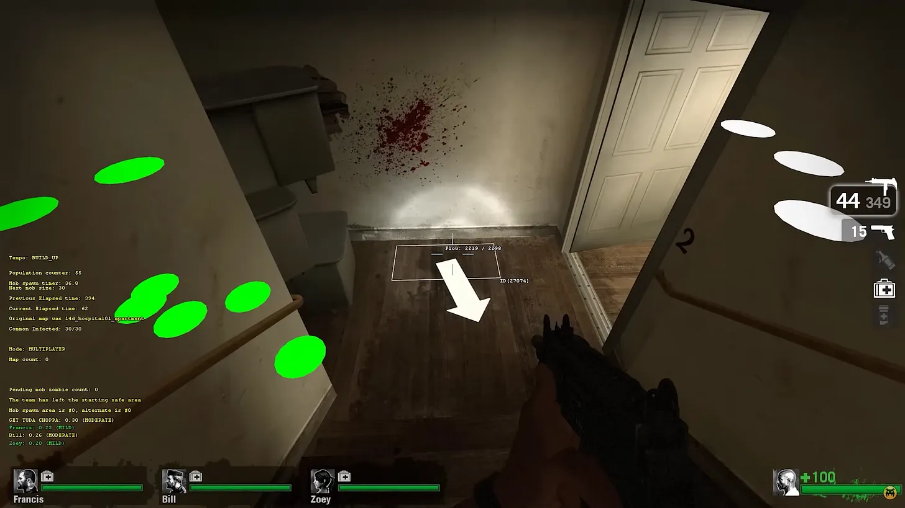
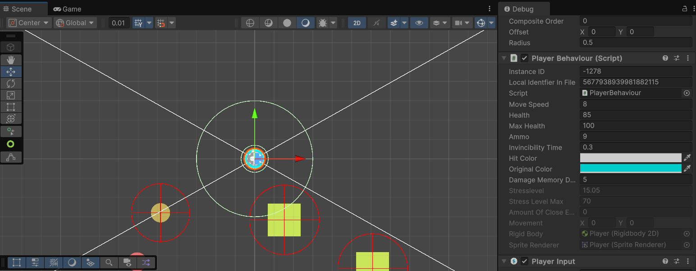
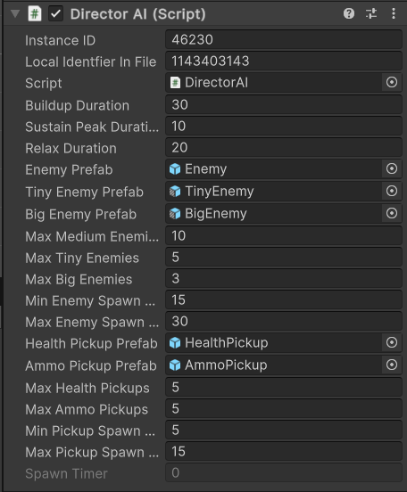
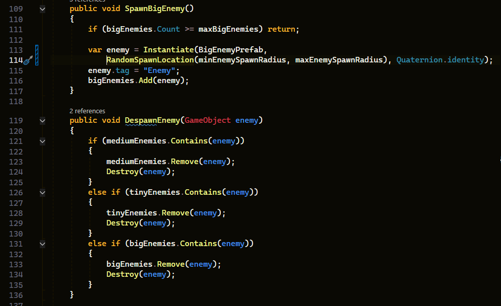
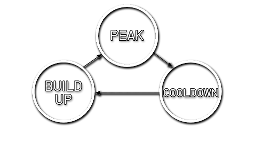
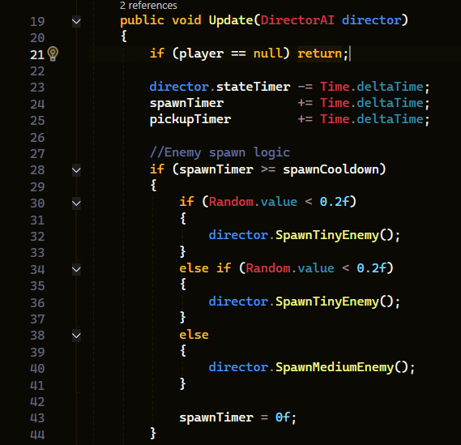
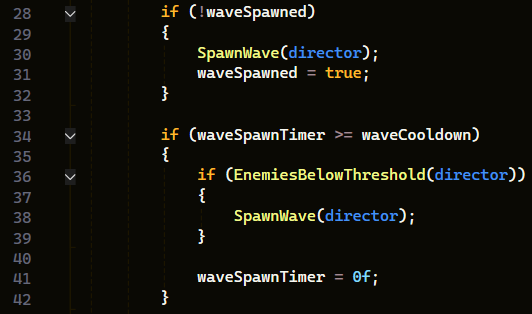
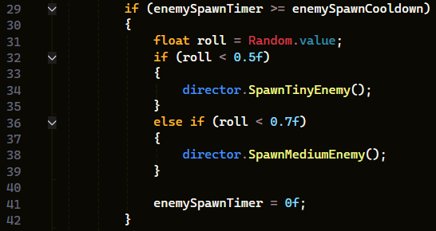
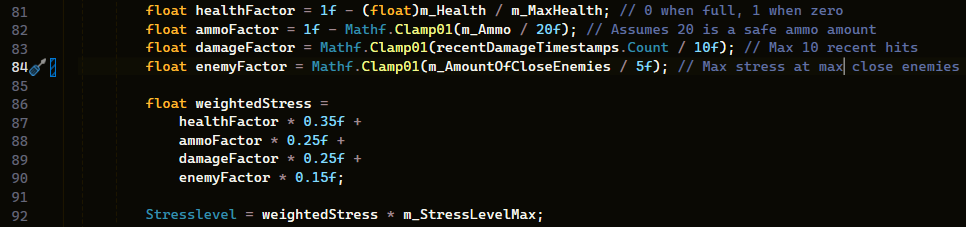
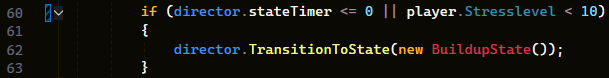

This project was created during my second year at Howest DAE for the course Gameplay Programming.
The goal was for us to research a topic of our choice that had something to do with AI in games (not the ChatGPT kind).
Together with the research we also had to create a small project using whatever we were researching to show we understood what we were talking about and doing.
I chose to research Director AI's, however since the github repository is private by the school I will show my research below and am unable to provide the demo.
During one of my courses at Howest DAE I got the task to research some kind of AI and try to create it myself. I immediately looked for something cool to research that would still be something I could create myself. The first thing I looked up was how the AI worked in a game which I thought had very cool and unique AI for its main antagonist: Alien Isolation. I learned that the alien (the antagonist in Alien Isolation) was controlled by its own brain and a director AI. Since the brain of the AI was just a very large behaviour tree I decided to look more into the other part: the Director AI.
A director AI is a class that has access to a large amount of data and reacts off of how this data changes, an example of this is the player's stresslevel, but more on that later. The term 'Director' comes from the movie industry where the director is the one that controls everything, which is practically what the AI does as well. It is essentially a state machine that changes state depending on what is happening in the game and mainly with the player.
Many games, such as Call of Duty for example, can be quite repetitive when playing the game multiple times (in the case of Call of Duty I am reffering to replaying the campaign). This is because every playthrough goes exactly the same. Events are triggered by triggerboxes which means things will only happen when a player is in a certain spot and every playthrough the same things happen at the same position. This is not necessarily a bad thing, but what if you want a more dynamic experience? This is where the director AI comes in. For example the director in Alien Isolation will randomly tell the alien to attack the player when the player is a bit too comfortable, which keeps the player on their toes. The director also prevents having to teleport the alien all the time to make sure he is close to the player, this works because the director always knows where the player is and just makes sure the alien stays close around that location. In Left 4 Dead a director AI is also used and you can actually toggle debug mode when playing. This way you can see what the director is thinking, as seen in the image below.
I could go on and on about the function of the director in Alien Isolation and other games that use it such as Left 4 Dead, but let's just get to the part where I make it myself.
I made my project in Unity using C#. I chose to use Unity as I needed a very quick and small game to let the director...direct. Unity is perfect for this as it is easy to get a small game going where I could implement my Director AI. In Unity it is also very easy to see the parameters of the director AI in the inspector which saves time having to output everything to show how it works. In the image you can see how Unity debug mode offers us a lot of insight on what the director is taking into account.
 However the real question is how do we get started on this? First I make a simple player and some enemies that will chase the player. Then some simple pickups to create a tiny game loop. After this is implemented we get to the fun part: creating the director AI script. The director has control over everything except the player, it spawns and despawns enemies and pickups to control the player's stress level to make sure the game stays entertaining.
But how do we make sure the game stays entertaining? 'Oh I know! I'll just spawn massive hordes of enemies to make sure the player stays in action!' WRONG! Simply applying constant pressure gets stale or annoying for the player and leaves no breathing room. What we want to do is make the director turn up the heat, but also turn it down again. As I said in the beginning, the director is essentially a finite state machine. The finite state machine I created for this is based on the director in Left 4 Dead, it has 3 different states: BuildUp, Peak and Relax.
During this stage the director spawns more pickups to provide the player with enough resources to survive the incoming action. It also starts spawning more enemies to get the player's stress up. Overall this stage just prepares the player for what is coming while also building up towards the peak.
When the director enters its peak it starts to spawn hordes instead of individual enemies and keeps spawning more enemies to make sure the player is constantly fighting. As the name suggests it makes sure the player's stress peaks and they have to use all the resources that have been given in the buildup.
The player finally gets some room to breathe and lick their wounds. The enemies stop spawning, besides from some lonely random monster that shouldn't be much of a threat. The pickup spawn rates even back out to get the player back on his feet, but not at a level like the buildup stage pumps the player full of ammo and healthpacks. This stage should not last too long to make sure the player doesn't get bored but should be long enough to calm the player back down from all the adrenaline and lower the player's stress.
Another role of the director is to make sure the player doesn't break rules set in the game. For example going out of bounds. When the player goes out of bounds the player's stress spikes and overwhelmes them with enemies to punish them for leaving the designated play-area. As seen in the GIF below (which is of course over-exaggerated) the director immediately reacts when the player breaks one of the game's 'rules'.
Now I have been talking a lot about the player's stress, but what is this value? Now one of the games that uses this director AI: Left 4 Dead. They determine stress by the location of the player, the environment around them and their stats. For example, when the player is getting further away from their teammates their stress goes up. The stress also goes up when their health or ammo gets lower or they have more enemies close to them. So in summary the stress level is an indicator for the director wether the player is getting much action or not, if the stress is below a certain threshold the director will put more pressure on the player. The opposite is also true as high stress for some time will make the director cut back on the action to let the player recover. In my implementation this is a value, calculated with the player's health, ammo, taken damage in the last couple of seconds and also takes the amount of close enemies in account. I give each of these values a weight and use that to determine how 'stressed' the player is and as such react accordingly.
This value then influences the stage of the director. For example, if the director is building up and the stress is much higher than usual it would cause problems to the player if the peak is only reached after a set time. This is why the director also reaches its peak when the stress is too high, to keep the balance. This can also work the other way around. If the stress is super low during the relax stage it goes into the build up faster, to make sure the player does not get bored.
It is clear that the director AI can greatly help with keeping the game entertaining and dynamic. The game stays interesting, because it reacts to what is happening to the player instead of just making things happen when certain checkpoints are reached. This project was very interesting to make and it is clear that there is endless possibility for expansion. However it is also possible to keep it very simple (as proven by this small project). I will definitely keep this as an option when I make new games in the future. One of the flaws the director AI does have is that it is very much a numbers game, balancing the min and max of every parameter. I feel like this can make or break a game as the enemies could overwhelm too much or be too easy to defeat. Luckily all it takes to fix this problem is a lot of testing and adjusting, but it is still something that can be annoying to deal with. Of course this is just a small project so it does not show the complete power of the director AI, but it is definitely worth looking into.
State machine diagram
L4D2 Director Scripts
AlienSwarm Director Source
AI and Games Article
The Director - Left 4 Dead Wiki
Toolify Article